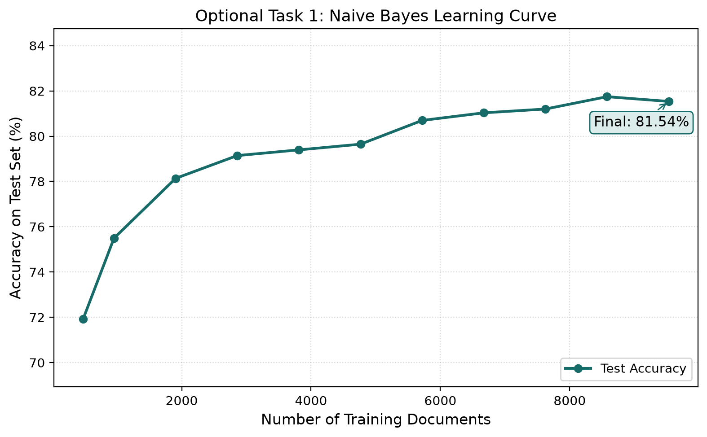
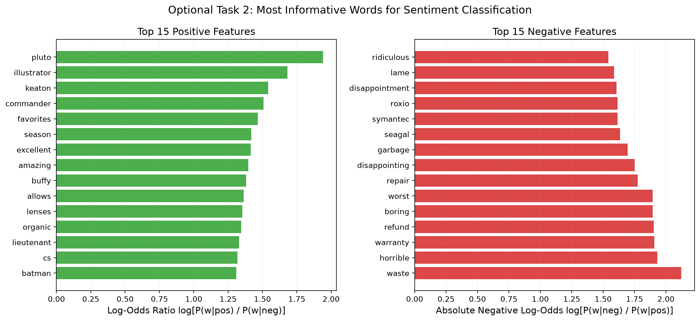
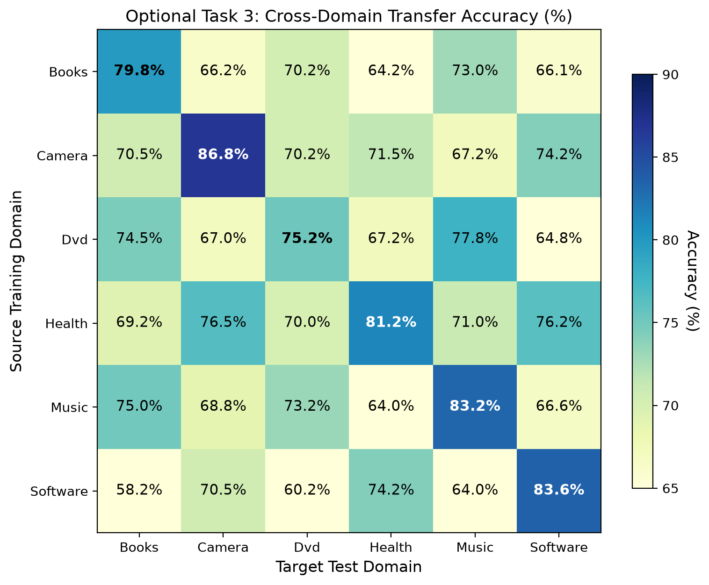
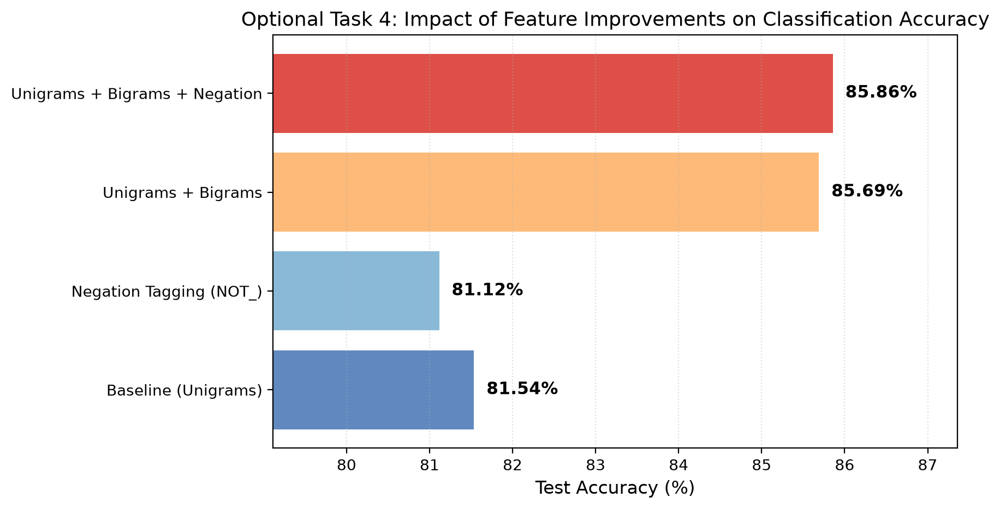

Assignment 4 — Text Classification with Naive Bayes
In this assignment, we implement a Multinomial Naive Bayes text classifier from scratch in pure Python to perform sentiment analysis on customer reviews. The dataset originates from the domain adaptation study by Blitzer et al. (2007), comprising customer reviews across six distinct product categories: books, camera, dvd, health, music, and software.
Strict Implementation Constraint: As specified in the assignment instructions, all Naive Bayes parameter estimation,
probability smoothing, log-space scoring, and decision rules are implemented independently in standard Python without relying on machine learning libraries
such as scikit-learn.
Given a text document $\mathbf{d}$ represented as a sequence of words $(w_1, w_2, \dots, w_n)$ and a set of candidate classes $C = \{\text{pos}, \text{neg}\}$, Bayes' rule expresses the posterior probability as:
Under the naive independence assumption, the occurrence of each word is assumed to be conditionally independent of all other words given the document's class label:
Multiplying hundreds of small individual word probabilities results in severe floating-point underflow (evaluating to 0.0).
To maintain numerical stability, all calculations are performed in log-space, transforming products into sums:
The predicted sentiment label $\hat{c}$ corresponds to the Maximum A Posteriori (MAP) class:
If a word in the test set was never encountered in class $c$ during training, its empirical frequency is zero ($\text{count}(w, c) = 0$). Without smoothing, $P(w \mid c) = 0$, causing $\log P(w \mid c) = -\infty$ and completely eliminating class $c$ from consideration regardless of all other words. To resolve this zero-frequency problem, we apply Laplace / Add-$\alpha$ smoothing with an explicit out-of-vocabulary ($\text{UNK}$) reserve bucket:
where $|V|$ is the total number of unique words across the training vocabulary, and the $+1$ term accounts for the probability mass allocated to novel unseen words ($\text{UNK}$). For any novel out-of-vocabulary word not present in $V$, the smoothed likelihood defaults cleanly to:
This guarantees that $\sum_{w \in V \cup \{\text{UNK}\}} P(w \mid c) = 1$, yielding a mathematically closed probability distribution. All classification decisions are performed strictly in log-space to eliminate numerical underflow, exponentiating back to joint probabilities only for single-word verification.
The complete review dataset consists of 11,914 customer reviews. In accordance with the assignment guidelines, the collection was partitioned into an 80% training set and a 20% evaluation set:
| Dataset Partition | Document Count | Percentage | Positive Reviews | Negative Reviews |
|---|---|---|---|---|
| Training Set | 9,531 | 80.0% | 4,847 | 4,684 |
| Evaluation Test Set | 2,383 | 20.0% | 1,153 | 1,230 |
| Total Collection | 11,914 | 100.0% | 6,000 | 5,914 |
The core Naive Bayes classifier is implemented via modular functions in run_nb.py:
from collections import Counter
import math
def read_documents(doc_file, return_categories=False):
"""
Reads the sentiment dataset.
Line format: <category> <sentiment> <doc_id> <word1> <word2> ...
Returns (docs, labels) matching the assignment PDF specification.
If return_categories=True, returns (docs, labels, categories).
"""
docs, labels, categories = [], [], []
with open(doc_file, "r", encoding="utf-8") as f:
for line in f:
words = line.strip().split()
if len(words) < 3:
continue
categories.append(words[0])
labels.append(words[1])
docs.append(words[3:])
if return_categories:
return docs, labels, categories
return docs, labels
def train_nb(documents, labels, alpha=1.0):
num_docs = len(documents)
class_counts = Counter(labels)
classes = list(class_counts.keys())
log_priors = {c: math.log(count / num_docs) for c, count in class_counts.items()}
word_counts = {c: Counter() for c in classes}
total_words = {c: 0 for c in classes}
vocab = set()
for doc, label in zip(documents, labels):
word_counts[label].update(doc)
total_words[label] += len(doc)
vocab.update(doc)
vocab_size = len(vocab)
denominators = {c: total_words[c] + alpha * (vocab_size + 1) for c in classes}
log_likelihoods = {c: {} for c in classes}
for c in classes:
denom = denominators[c]
for w, count in word_counts[c].items():
log_likelihoods[c][w] = math.log((count + alpha) / denom)
log_unk = {c: math.log(alpha / denominators[c]) for c in classes}
return {
"classes": classes, "log_priors": log_priors,
"log_likelihoods": log_likelihoods, "log_unk": log_unk
}
def score_doc_label(document, label, model):
log_prob = model["log_priors"][label]
class_log_likes = model["log_likelihoods"][label]
unk_log_prob = model["log_unk"][label]
for w in document:
log_prob += class_log_likes.get(w, unk_log_prob)
return log_prob
def classify_nb(document, model):
best_class = None
best_score = -float("inf")
for c in model["classes"]:
score = score_doc_label(document, c, model)
if score > best_score:
best_score = score
best_class = c
return best_classBefore evaluating on the test set, the classifier was verified against the two mandatory sanity checks described in the assignment:
Evaluating small documents of length 1 verifies that polarizing words shift probability in the expected direction, with joint probabilities matching the expected 0.001–0.002 magnitude:
| Test Document | P(pos, doc) | P(neg, doc) | Predicted Label | Verification Status |
|---|---|---|---|---|
['great'] |
0.001321 (log: -6.6292) | 0.000528 (log: -7.5457) | pos | ✓ PASS: P(pos, ['great']) > P(neg, ['great']) |
['bad'] |
0.000172 (log: -8.6663) | 0.000455 (log: -7.6958) | neg | ✓ PASS: P(neg, ['bad']) > P(pos, ['bad']) |
The phrase ['a', 'top-quality', 'performance'] was passed to score_doc_label.
Because our smoothing handles out-of-vocabulary terms gracefully, the function executed without crashing,
yielding $\log P(\text{pos}, \mathbf{d}) = -26.3663$ and $\log P(\text{neg}, \mathbf{d}) = -27.0375$, correctly predicting pos.
Applying the trained Naive Bayes classifier ($\alpha = 1.0$) to the 2,383 unseen test documents yields the following performance:
81.54% (1,943 / 2,383 reviews correctly classified)
95% Confidence Interval: 81.54% ± 1.56% ([79.98%, 83.09%])
| Actual \ Predicted | Predicted Positive | Predicted Negative | Class Total | Class Accuracy |
|---|---|---|---|---|
| Actual Positive | 906 (True Positive) | 247 (False Negative) | 1,153 | 78.58% |
| Actual Negative | 193 (False Positive) | 1,037 (True Negative) | 1,230 | 84.31% |
| Total Predicted | 1,099 | 1,284 | 2,383 | 81.54% |
Smoothing Sensitivity Analysis (Assignment Hint 2): Evaluating different values of the Laplace parameter $\alpha$ confirms that smoothing significantly improves accuracy over empirical frequencies: $\alpha = 0.01 \to 77.26\%$, $\alpha = 0.1 \to 79.35\%$, $\alpha = 1.0 \to \mathbf{81.54\%}$, and $\alpha = 2.0 \to 81.54\%$. The standard default of $\alpha = 1.0$ provides the ideal regularization on this corpus.
Of the 2,383 test documents, 440 reviews were misclassified (193 False Positives and 247 False Negatives). Because the Naive Bayes conditional independence assumption multiplies evidence additively in log-space, the resulting joint log-score difference ($|\log P(\text{pos}, \mathbf{d}) - \log P(\text{neg}, \mathbf{d})|$) represents an uncalibrated log-score margin rather than a true calibrated posterior probability. A qualitative analysis of failure cases exhibiting the largest log-score margin in the wrong direction reveals three primary failure modes:
“here 's a good litmus test to show how good a book like breathing lessons is - nothing extraordinary happens and yet i did not want to put the book down ... some people may call this boring or dull , but i would call it purely exceptional . i loved this book and highly recommend it”
True Label: POS | Predicted: NEG | Log-Score Margin: 26.56 in favor of NEG
Error Mechanism: The reviewer employs a rhetorical concession, anticipating potential criticisms by acknowledging that nothing extraordinary happens and that others might describe the novel as boring or dull, only to refute those critiques by declaring the book purely exceptional. Because Naive Bayes accumulates log-likelihoods additively across words, high-frequency negative tokens (such as dull, boring, and nothing) substantively outweighed the positive appraisal terms at the end, causing a false negative prediction.
“we bought this camera thinking that it would be our do-all eurocam for an upcoming trip to europe . it promised a sufficient range of performance and features ... sadly , the camera is not up to filling this role ... the camera 's performance and ease of use is below that of similarly priced p&s cameras currently on the market . if you need a true wide-angle p&s , you need this camera . otherwise forget it”
True Label: NEG | Predicted: POS | Log-Score Margin: 127.14 in favor of POS
Error Mechanism: This massive review (2,644 words) provides an exhaustive technical analysis evaluating every feature, lens setting, and compression mode. In sentiment corpora, technical specifications frequently use nouns that correlate positively with praise in general reviews (e.g., lens appears 22 times, contributing over +18 log units toward positive). The sheer cumulative length of descriptive specifications completely submerged the customer's actual negative verdict ("below that of similarly priced p&s cameras... otherwise forget it").
“the decalogue is one of several excellent tv series by european directors that puts us tv to shame ... apparently all of the other ( imported ) editions of the dekalog are of better quality & offer more extras than this edition , which is inexcusable given the price”
True Label: NEG | Predicted: POS | Log-Score Margin: 44.10 in favor of POS
Error Mechanism: The reviewer opens with glowing praise for the cinematic masterpiece itself (excellent, puts us tv to shame), but writes a 1-star negative review targeting the distributor's low-quality North American DVD release (poor compression, absence of features, and high cost compared to imported editions). Because Naive Bayes treats all words in a document uniformly, praise for the artistic content overwhelmed the criticism of the physical product, producing a False Positive.
To analyze how data volume influences Naive Bayes performance, models were trained on subsets of increasing size (from 5% up to 100% of the training data) and evaluated on the fixed 20% test partition:
| Training Fraction | Training Examples | Vocabulary Size | Test Accuracy |
|---|---|---|---|
| 5% | 476 | 9,263 | 71.93% |
| 10% | 953 | 14,565 | 75.49% |
| 20% | 1,906 | 21,532 | 78.14% |
| 30% | 2,859 | 27,249 | 79.14% |
| 40% | 3,812 | 31,464 | 79.40% |
| 50% | 4,765 | 35,346 | 79.65% |
| 60% | 5,718 | 39,141 | 80.70% |
| 70% | 6,671 | 42,573 | 81.03% |
| 80% | 7,624 | 46,223 | 81.20% |
| 90% | 8,577 | 49,432 | 81.75% |
| 100% | 9,531 | 52,392 | 81.54% |

Observation: Accuracy rises steeply from 71.93% at 5% data to ~79.40% at 40% data, after which performance gains gradually plateau. This indicates that while vocabulary coverage increases with more data (reaching 52,392 words), the simple unigram bag-of-words model shows diminishing returns, with accuracy leveling off around 81–82% on this dataset due to its inability to capture context and grammar.
To identify the words most strongly indicative of positive and negative reviews, we compute the log-odds ratio:
Following the instructor's hint, a higher smoothing parameter ($\alpha = 10.0$) and a minimum frequency threshold ($\ge 5$) were applied to eliminate noisy rare words:

| Rank | Top Positive Words | Log-Odds | Top Negative Words | Log-Odds |
|---|---|---|---|---|
| 1 | pluto | +1.941 | waste | -2.121 |
| 2 | illustrator | +1.682 | horrible | -1.930 |
| 3 | keaton | +1.541 | warranty | -1.908 |
| 4 | commander | +1.508 | refund | -1.902 |
| 5 | favorites | +1.466 | boring | -1.895 |
| 6 | season | +1.418 | worst | -1.894 |
| 7 | excellent | +1.415 | repair | -1.776 |
| 8 | amazing | +1.397 | disappointing | -1.752 |
| 9 | buffy | +1.381 | garbage | -1.695 |
| 10 | allows | +1.363 | seagal | -1.634 |
Linguistic Insights: Negative sentiment is dominated by universally applicable critical terms (waste, horrible, refund, warranty, worst, repair), reflecting customer dissatisfaction and return processes. Positive indicators include conventional praise terms such as excellent, amazing, and favorites, as well as domain-specific names and entities such as pluto, illustrator, keaton, and buffy.
The dataset was created specifically to study domain adaptation (Blitzer et al., 2007). To evaluate how well sentiment classifiers transfer across product genres, models were trained exclusively on one domain and evaluated across all other domains:

The assignment specifically asks to examine the performance impact when training a classifier on camera reviews and testing it on book reviews. We evaluate this cross-domain drop through two complementary perspectives:
Why does this drop occur? Camera reviews rely on technical hardware vocabulary (megapixels, lens, battery, autofocus, sensor). When applied to books, many of these domain-specific features are largely absent or much less relevant, forcing the model to rely only on general sentiment words. Furthermore, terms like durable or portable carry no relevance in book evaluations, demonstrating the necessity of domain adaptation techniques.
To address the limitations uncovered in error analysis (negation and word order), we implemented
Negation Tagging (prefixing words following negative markers with NOT_)
and Word Bigrams (capturing adjacent pairs of tokens):

| Model & Feature Configuration | Vocabulary Size | Test Accuracy | Gain (Percentage Points) |
|---|---|---|---|
| Baseline Custom Naive Bayes (Unigrams) | 52,392 | 81.54% | Reference |
| Naive Bayes + Negation Tagging (NOT_) | 63,337 | 81.12% | -0.42 pts |
| Naive Bayes + Unigrams & Bigrams | 484,472 | 85.69% | +4.15 pts |
| Naive Bayes + Bigrams & Negation | 530,623 | 85.86% | +4.32 pts |
| Scikit-learn LinearSVC Benchmark (TF-IDF) | 25,000 | 85.52% | +3.98 pts |
Why did Negation Tagging alone slightly decrease performance?
Prefixing words in negative contexts with NOT_ expanded the feature space by nearly 11,000 tokens (from 52,392 to 63,337).
Because many negated words occurred only once or twice in the training set, this created significant data sparsity without enough statistical mass per token.
However, when combined with bigrams, negation tagging regained positive traction (+4.32 percentage points).
To determine whether the +4.15 percentage point improvement from bigrams is statistically significant over the unigram baseline rather than random sample variation, we performed McNemar's test with continuity correction on the discordant test predictions:
The result is statistically significant at the \(\alpha = 0.001\) level, confirming that incorporating bigram features yields a genuine performance improvement over the unigram baseline.
Key Discovery: Expanding the feature space to include bigrams produces a substantial
+4.15 percentage point gain (from 81.54% to 85.69%). Bigrams naturally capture collocations and local negations
(e.g., not_good, waste_of, of_money, must_read) without heuristic rules.
Our custom Naive Bayes with bigrams (85.86%) performs on par with scikit-learn's optimized LinearSVC (85.52%, a marginal difference of only 0.34 percentage points),
demonstrating that generative probabilistic models remain highly competitive with discriminative linear classifiers when paired with rich n-gram features.
The complete Python source code for Assignment 4 is available here:
run_nb.py.